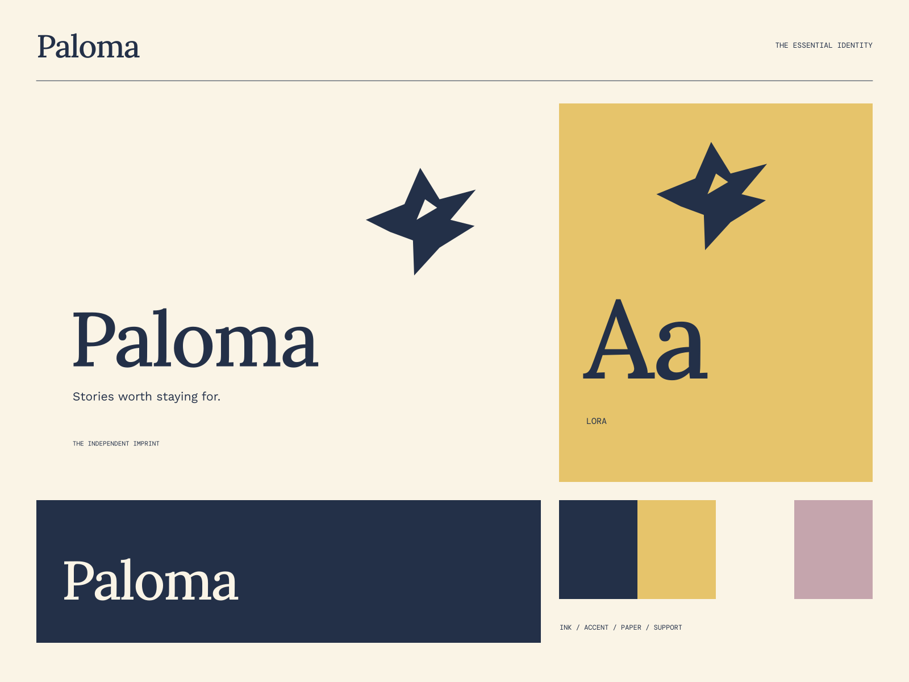

01
A voice of their own
Work chosen for its character, care, and unmistakable perspective.
AN INDEPENDENT PRESS / OPEN WORLDS
Stories worth staying for. An independent point of view.
A coherent little world
An independent point of view. Stories worth staying for.
01
Work chosen for its character, care, and unmistakable perspective.
02
Considered paper, good typography, and room for the words.
03
Stories to return to, pass on, and keep close.

The point of view
Cut-paper flight, book-cover rhythm, drop-cap-like display typography, and a rich mustard-and-ink palette. A literary world with a contemporary editorial edge.